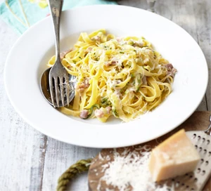

Creamy courgette and bacon pasta

A quick and creamy carbonara-style tagliatelle that showcases delicious courgettes contrasted with cream and pancetta.
Ingredients
- 1 tsp olive oil
- 150g diced pancetta or smoked bacon lardons
- 4 courgettes, coarsely grated
- 1 garlic clove, crushed
- handful freshly grated parmesan
- 1 small tub (200g) low-fat crème fraîche
- 300g tagliatelle
Method
- Heat the olive oil in a large frying pan and sizzle the pancetta or bacon for about 5 mins until starting to crisp. Turn up the heat and add the grated courgette to the pan. Cook for 5 mins or until soft and starting to brown then add the garlic and cook for a minute longer. Season and set aside.
- Cook the tagliatelle according to the pack instructions and scoop out a cupful of cooking water. Drain the tagliatelle and tip into the frying pan with the bacon and courgette. Over a low heat toss everything together with the crème fraiche and half the Parmesan adding a splash of pasta water too if you need to loosen the sauce. Season to taste and serve twirled into bowls with the remaining Parmesan scattered over.